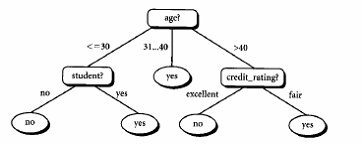
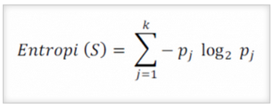
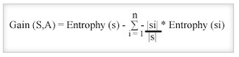
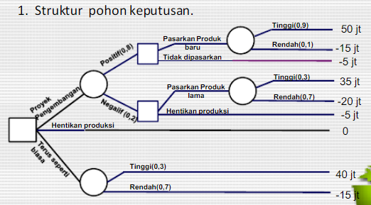
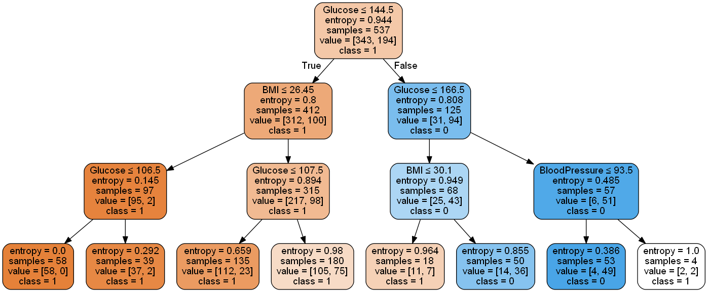

DATA MINING – Konsep Pohon Keputusan¶
Latar Belakang Pohon Keputusan¶
Untuk menghadapi masalah-masalah ini, manusia mulai mengembangkan sebuah sistem yang dapat membantu manusia agar dapat dengan mudah mampu untuk menyelesaikan masalah-masalah tersebut.
Adapun pohon keputusan ini adalah sebuah jawaban akan sebuah sistem yang manusia kembangkan untuk membantu mencari dan membuat keputusan untuk masalah-masalah tersebut dan dengan memperhitungkan berbagai macam factor yang ada di dalam lingkup masalah tersebut. Dengan pohon keputusan, manusia dapat dengan mudah melihat mengidentifikasi dan melihat hubungan antara faktor-faktor yang mempengaruhi suatu masalah dan dapat mencari penyelesaian terbaik dengan memperhitungkan faktor-faktor tersebut.
Pohon keputusan ini juga dapat menganalisa nilai resiko dan nilai suatu informasi yang terdapat dalam suatu alternatif pemecahan masalah. Peranan pohon keputusan ini sebagai alat Bantu dalam mengambil keputusan (decision support tool) telah dikembangkan oleh manusia sejak perkembangan teori pohon yang dilandaskan pada teori graf. Kegunaan pohon keputusan yang sangat banyak ini membuatnya telah dimanfaatkan oleh manusia dalam berbagai macam sistem pengambilan keputusan.
Pengertian Pohon Keputusan¶
Pohon yang dalam analisis pemecahan masalah pengambilan keputusan adalah pemetaan mengenai alternatif-alternatif pemecahan masalah yang dapat diambil dari masalah tersebut.
Pohon tersebut juga memperlihatkan faktor-faktor kemungkinan/probablitas yang akan mempengaruhi alternatif-alternatif keputusan tersebut, disertai dengan estimasi hasil akhir yang akan didapat bila kita mengambil alternatif keputusan tersebut
Manfaat Pohon Keputusan¶
Pohon keputusan adalah salah satu metode klasifikasi yang paling populer karena mudah untuk diinterpretasi oleh manusia. Pohon keputusan adalah model prediksi menggunakan struktur pohon atau struktur berhirarki. Konsep dari pohon keputusan adalah mengubah data menjadi pohon keputusan dan aturan-aturan keputusan.
Manfaat utama dari penggunaan pohon keputusan adalah kemampuannya untuk mem-break down proses pengambilan keputusan yang kompleks menjadi lebih simpel sehingga pengambil keputusan akan lebih menginterpretasikan solusi dari permasalahan. Pohon Keputusan juga berguna untuk mengeksplorasi data, menemukan hubungan tersembunyi antara sejumlah calon variabel input dengan sebuah variabel target.
Pohon keputusan memadukan antara eksplorasi data dan pemodelan, sehingga sangat bagus sebagai langkah awal dalam proses pemodelan bahkan ketika dijadikan sebagai model akhir dari beberapa teknik lain. Sering terjadi tawar menawar antara keakuratan model dengan transparansi model.
Kelebihan Pohon Keputusan¶
Kelebihan dari metode pohon keputusan adalah:
- Daerah pengambilan keputusan yang sebelumnya kompleks dan sangat global, dapat diubah menjadi lebih simpel dan spesifik.
- Eliminasi perhitungan-perhitungan yang tidak diperlukan, karena ketika menggunakan metode pohon keputusan maka sample diuji hanya berdasarkan kriteria atau kelas tertentu.
- Fleksibel untuk memilih fitur dari internal node yang berbeda, fitur yang terpilih akan membedakan suatu kriteria dibandingkan kriteria yang lain dalam node yang sama. Kefleksibelan metode pohon keputusan ini meningkatkan kualitas keputusan yang dihasilkan jika dibandingkan ketika menggunakan metode penghitungan satu tahap yang lebih konvensional
- Dalam analisis multivariat, dengan kriteria dan kelas yang jumlahnya sangat banyak, seorang penguji biasanya perlu untuk mengestimasikan baik itu distribusi dimensi tinggi ataupun parameter tertentu dari distribusi kelas tersebut. Metode pohon keputusan dapat menghindari munculnya permasalahan ini dengan menggunakan criteria yang jumlahnya lebih sedikit pada setiap node internal tanpa banyak mengurangi kualitas keputusan yang dihasilkan.
Kekurangan Pohon Keputusan¶
- Terjadi overlap terutama ketika kelas-kelas dan criteria yang digunakan jumlahnya sangat banyak. Hal tersebut juga dapat menyebabkan meningkatnya waktu pengambilan keputusan dan jumlah memori yang diperlukan.
- Pengakumulasian jumlah eror dari setiap tingkat dalam sebuah pohon keputusan yang besar.
- Kesulitan dalam mendesain pohon keputusan yang optimal.
- Hasil kualitas keputusan yang didapatkan dari metode pohon keputusan sangat tergantung pada bagaimana pohon tersebut didesain.
Model Pohon Keputusan¶
Pohon keputusan adalah model prediksi menggunakan struktur pohon atau struktur berhirarki. Contoh dari pohon keputusan dapat dilihat di Gambar berikut ini.

Disini setiap percabangan menyatakan kondisi yang harus dipenuhi dan tiap ujung pohon menyatakan kelas data. Contoh di Gambar 1 adalah identifikasi pembeli komputer,dari pohon keputusan tersebut diketahui bahwa salah satu kelompok yang potensial membeli komputer adalah orang yang berusia di bawah 30 tahun dan juga pelajar. Setelah sebuah pohon keputusan dibangun maka dapat digunakan untuk mengklasifikasikan record yang belum ada kelasnya. Dimulai dari node root, menggunakan tes terhadap atribut dari record yang belum ada kelasnya tersebut lalu mengikuti cabang yang sesuai dengan hasil dari tes tersebut, yang akan membawa kepada internal node (node yang memiliki satu cabang masuk dan dua atau lebih cabang yang keluar), dengan cara harus melakukan tes lagi terhadap atribut atau node daun. Record yang kelasnya tidak diketahui kemudian diberikan kelas yang sesuai dengan kelas yang ada pada node daun. Pada pohon keputusan setiap simpul daun menandai label kelas. Proses dalam pohon keputusan yaitu mengubah bentuk data (tabel) menjadi model pohon (tree) kemudian mengubah model pohon tersebut menjadi aturan (rule).
ALGORITMA¶
-
Pohon dibangun dalam suatu metoda rekursif topdown divide and-conquer.
-
Seluruh contoh pelatihan dimulai dari simpul root, lalu dilakukan penujian.
- Mencabang ke jalur yang benar berdasarkan hasil pengujian.
-
Apakah simpul leaf ditemukan? Jika true, masukkan ke kelas target, jika false kembali ke langkah awal.
-
Atribut-atribut berada dalam suatu kategori (jika bernilai kontinu, nilai-nilai tersebut didistribusikan terlebih dahulu).
-
Contoh-contoh dipartisi secara rekursif berdasarkan atribut terpilih.
-
Atribut-atribut uji dipilih berdasarakn heuristik atau pengukurann statistik (misal, information gain).
Rumus¶
Menghitung Entrophy¶

S : Himpunan kasus
k : Jumlah partisi S
Pj : Probabilitas yang didapat dari jumlah (Ya/Tidak) dibagi total kasus
Menghitung Gain¶

S : Himpunan kasus
A : Atribut
n : jumlah partisi atribut A
|Si| : jumlah kasus pada partisi ke-i
|S| : jumlah kasus dalam S
Contoh Kasus¶
PT. Lana Sejahtera adalah sebuah perusahaan yangmemproduksi jenis barang kosmetik, semula salah satuproduknya bisa menguasai pasaran. Namun karena suatu halmaka tingkat penjualan mengalami penurunan, berdasarkansurvey perusahaan dihadapkan pada tiga pilihan :
- Meningkatkan kualitas melalui pengembangan produk.
- Meneruskan penjualan tanpamelakukan perubahan.
-
Menghentikanproduksi secara keseluruhan.
-
Jika hasil pengembangan positif dan produk baru kemudiandipasarkan, perusahaan kemungkinan dihadapkan padadua pilihan. Jika penjualan tinggi perusahaan memperolehkeuntungan 50 juta, dan jika penjualan rendah perusahaanrugi 15 juta. Bila hasil pengembangan positif tetapiperusahaan memutuskan tidak memasarkan produk baru,perusahaan rugi 5 juta untuk biaya pengembangan.
-
Jika perusahaan memutuskan tidak melakukan proyekpengembangan, melainkan tetap memasarkan produk lamamaka diharapkan untung 40 juta pada penjualan tinggi danrugi 15 juta pada penjualan rendah.
-
Jika perusahaan memutuskan untuk tetap memasarkanproduk lama setelah mengetahui hasil proyekpengembangan negatif, maka hasil yang akan diperolehadalah pada point 2 dikurangi dengan biaya penelitian.Tetapi bila perusahaan menghentikan produksi makakerugian yang diderita adalah 5 juta (biaya proyekpengembangan).
-
Untuk mengetahui peluang bahwa proyek pengembanganakan berhasil, perusahaan melakukan konsolidasi dankonsultasi dengan staf ahli dan lembaga penelitianperusahaan. Diperoleh hasil bahwa peluang keberhasilan pengembangan produk adalah 80% dan peluang gagal adalah 20%.
-
Hasil diskusi dengan departemen marketing, maka tingkatpenjualan diperkirakan sebagai berikut :
o Bila proyek pengembangan positif dan dihasilkan produkbaru, maka peluang tingkat penjualan tinggi 90% danpeluangtingkat penjualan rendah 10%
o Bila produk lama tetap dipasarkan maka peluang untukmemperoleh tingkat penjualan tinggi adalah 30%sedangkan peluang tingkat penjualan rendah adalah 70%.
Gambarkan Decision Tree untuk menentukan pilihan terbaikbagi PT. Lana Sejahtera.

IMPLEMENTASI¶
Alat & Bahan¶
Sebelum menerapkan konsep decision tree pada studi kasus yang telah ditentukan, beberapa tools yang perlu dipersiapkan agar program yang kita rancang bisa dieksekusi dengan baik diantaranya:
- python 3.x (versi 3 keatas).
- Anaconda Navigator atau Pycharm.
Untuk mempermudah kawan-kawan mendapatkan toolsnya, sillakan kawan-kawan bisa download tools-nya
Studi kasus pada Balance Scales adalah mengklasifikasikan beberapa poin perolehan suatu percobaan dengan 3 klasifikasi objek. Berikut source code dan penjelasan untuk menyelesaikan study kasus tersebut dengan konsep Decision Tree Clasification.
Langkah-langkah:¶
Pertama¶
Import beberapa library dari python seperti:
-
pandas => memuat sebuah file ke dalam tabel virtual ala spreadsheet yang memiliki struktur data yang diperukan untuk membersihkan data mentah ke dalam sebuah bentuk yang cocok untuk dianalisis.
-
numpy => untuk operasi vektor dan matriks. Fiturnya hampir sama dengan MATLAB dalam mengelola array dan array multidimensi.
-
sklearn => untuk mengimportkanlibrary data science. Berbagai fungsi didalamnya seperti fungsi agregasi, hitung metriks, hitung akurasi, display gambar, dan lain sebagainya.
-
seaborn => library untuk membuat grafik statistik.
-
pydotplus => library untuk memvisualisasikan bentuk hirarki.
import pandas as pd
from sklearn.tree import DecisionTreeClassifier
from sklearn.model_selection import train_test_split
from sklearn import metrics
from sklearn.metrics import accuracy_score
import seaborn as sns
from sklearn.tree import export_graphviz
from sklearn.externals.six import StringIO
from IPython.display import Image
from sklearn.tree import export_graphviz
import pydotplus
import numpy as npKedua¶
Mengimport data dari komputer dengan perintah pandas dan menampilkan data.
data = pd.read_csv('D:\MATKUL SI\Matkul UTM Semester4\diabetes.csv')
data.head()Ketiga¶
Melihat info kolom dalam data.
data.info()<class 'pandas.core.frame.DataFrame'>
RangeIndex: 768 entries, 0 to 767
Data columns (total 9 columns):
Pregnancies 768 non-null int64
Glucose 768 non-null int64
BloodPressure 768 non-null int64
SkinThickness 768 non-null int64
Insulin 768 non-null int64
BMI 768 non-null float64
DiabetesPedigreeFunction 768 non-null float64
Age 768 non-null int64
Outcome 768 non-null int64
dtypes: float64(2), int64(7)
memory usage: 54.1 KBKeempat¶
Memilih kolom uji untuk dihitung hasilnya.
zero_not_accepted = ['Glucose','BloodPressure','SkinThickness','BMI','Insulin']
# for col in zero_not_accepted:
# for i in data[col]:
# if i==0:
# colSum = sum(data[col])
# meanCol=colSum/len(data[col])
# data[col]=meanCol
for col in zero_not_accepted:
data[col]= data[col].replace(0,np.NaN)
mean = int(data[col].mean(skipna=True))
data[col] = data[col].replace(np.NaN,mean)Kelima¶
Membagi data train dan data test dengan data test 30%.
X = data.iloc[:,0:8]
y = data.iloc[:,8]
X = data[['Glucose','BloodPressure','SkinThickness','BMI','Insulin']]
y = data['Outcome']
#split data
X_train, X_test, y_train, y_test = train_test_split(X, y, test_size = 0.3, random_state=0)
Keenam¶
Menentukan entropy data.
clf = DecisionTreeClassifier(criterion="entropy", max_depth=3)
clf = clf.fit(X_train,y_train)
y_pred = clf.predict(X_test)Ketujuh¶
Meenentukan simpul root, simpul perantara, dan simpul leaf dari data yang telah diketahui nilai entropy-nya dan menampilah pohon keputusannya.
feature_cols = ['Glucose','BloodPressure','SkinThickness','BMI','Insulin']
dot_data = StringIO()
export_graphviz(clf, out_file=dot_data,
filled=True, rounded=True,
special_characters=True,feature_names = feature_cols,class_names=['1','0'])
graph = pydotplus.graph_from_dot_data(dot_data.getvalue())
graph.write_png('Diabetes.png')
Image(graph.create_png())
Donwload data file csvnya di link bawah ini :
Referensi¶
- Kusrini, Hartati, Penggunaan Penalaran Berbasis Kasus Untuk Membangun Basis Pengetahuan Dalam Sistem Diagnosis Penyakit
- Teknik Klasifikasi Pohon Keputusan Untuk Memprediksi Kebangkrutan Bank Berdasarkan Rasio Keuangan Bank
- Pramudiono, Iko. Pengantar Data Mining: Menambang Permata Pengetahuan di Gunung Data. http://www.ilmukomputer.com
- Kusrini, 2006, Sistem Pakar Teori dan Aplikasi, Penerbit Andi Offset, Yogyakarta.
- Santosa, Budi. 2007. Data Mining : Teknik Pemanfaatan Data untuk keperluan Bisnis. Graha Ilmu. Yogyakarta.
- Tan, Pang-Ning, Michael Steinbach, and Vipin Kumar. 2004. Introduction to Data Mining.
- Website WEKA. http://www.cs.waikato.ac.nz/ml/weka/.
- Witten, Ian H. dan Eibe Frank. 2005. Data Mining: Practical machine learning tools and techniques,2nd Edition. Morgan Kaufmann. San Francisco.
- Analisis-Dengan-Pohon-Keputusan-1